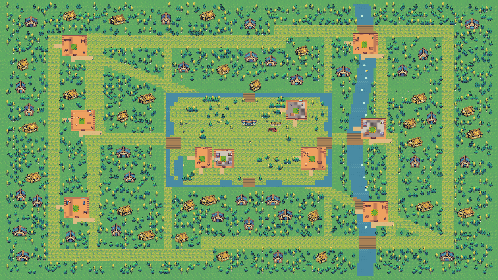

<!doctype html>
<html lang="en"><meta charset="utf-8"><meta name="viewport" content="width=device-width,initial-scale=1"><title>PU Town — Three towns</title>
<style>
*{box-sizing:border-box}body{margin:0;background:#18232b;color:#f1e7d5;font:16px system-ui,sans-serif}button,a{font:inherit}button{cursor:pointer;color:inherit;background:#293a45;border:1px solid #6a7b83;padding:9px 14px;border-radius:4px}button:hover,button[aria-selected=true]{background:#4d655f;border-color:#d8bc8c}button:focus-visible,a:focus-visible{outline:3px solid #efc477;outline-offset:3px}header{padding:16px 22px;display:flex;gap:16px;align-items:center;flex-wrap:wrap;border-bottom:1px solid #53666d}h1{font:600 23px Georgia,serif;margin:0 auto 0 0}nav{display:flex;gap:8px;flex-wrap:wrap}#stage{height:calc(100dvh - 90px);min-height:420px;position:relative;overflow:hidden;cursor:grab;touch-action:none;background:#101c24}#stage.dragging{cursor:grabbing}#world{position:absolute;width:7680px;height:4320px;transform-origin:0 0}#map{width:7680px;height:4320px;image-rendering:pixelated;pointer-events:none;user-select:none}.landmark{position:absolute;white-space:nowrap;transform:translate(-50%,32px);background:#17252be8;border:1px solid #aab7a3;color:#f1e7d5;padding:7px 14px;font-size:32px}.controls{position:absolute;right:18px;top:18px;max-width:260px;max-height:calc(100% - 36px);overflow-y:auto;background:#17252bf2;padding:14px;border:1px solid #617880;box-shadow:0 5px 20px #0005;cursor:auto}.controls p{font-size:13px;line-height:1.5}.tools{display:flex;gap:6px}.tools button{padding:8px 12px}#places,#rooms{display:grid;max-height:220px;overflow-y:auto;gap:5px;margin:14px 0}#places button,#rooms button{text-align:left;font-size:13px;padding:7px 10px}a{color:#dfc390;font-size:13px}.badge{position:absolute;left:18px;bottom:16px;pointer-events:none;font-size:13px;background:#17252bea;padding:10px}label{display:block;margin-top:12px;font-size:13px}input{accent-color:#d8bc8c}#hint{margin-bottom:0} @media(max-width:650px){header{padding:12px}h1{width:100%}nav button{font-size:13px;padding:7px}#stage{height:calc(100dvh - 115px)}.controls{max-width:190px;right:8px;top:8px;padding:10px}#places,#rooms{max-height:160px}.controls p{font-size:11px}.badge{left:8px;bottom:8px;font-size:11px;max-width:180px}}
#motion{position:absolute;inset:0;pointer-events:none}.controls,.badge{z-index:3}#labels{position:absolute;inset:0;z-index:2}summary{cursor:pointer;margin-top:14px;font-weight:600}</style>
<header><h1>One game. Three towns.</h1><nav role="tablist" aria-label="Map theme"><button role="tab" data-theme="village" aria-selected="true">Vibrant village</button><button role="tab" data-theme="horror" aria-selected="false">Dark horror</button><button role="tab" data-theme="cyberpunk" aria-selected="false">Cyberpunk city</button></nav></header>
<main id="stage" tabindex="0" aria-label="Map preview. Drag or use arrow keys to pan. Plus and minus zoom."><div id="world"><div id="labels"></div></div>
<aside class="controls"><strong id="title">Sunwater Village</strong><p id="description"></p><div class="tools"><button id="minus" aria-label="Zoom out">−</button><button id="plus" aria-label="Zoom in">+</button><button id="fit">Fit map</button></div><label><input id="show-labels" type="checkbox" checked> Show landmarks</label><details open><summary id="room-count">Interiors</summary><div id="rooms"></div></details><details><summary>Town landmarks</summary><div id="places"></div></details><p id="motion-count"></p><a id="download" href="village/map.json" download>Download editable Tiled map</a><p id="hint">Drag to pan. Scroll to zoom.<br>7680 × 4320 pixels · Supplied asset pack · Live animation</p></aside><canvas id="motion" aria-hidden="true"></canvas><div class="badge">Village playable · Three editable maps · Ten retained Seats<br>Multiplayer travel balance needs playtesting</div></main>
<script src="viewer.js"></script></html>
